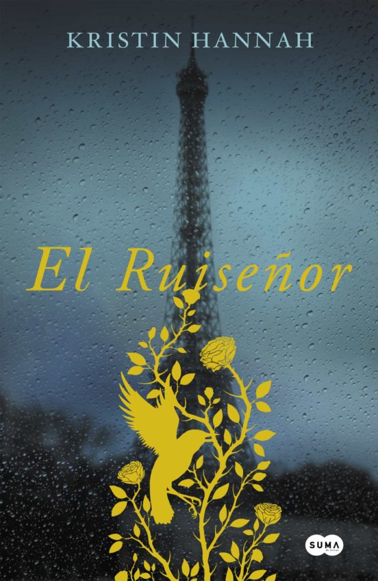
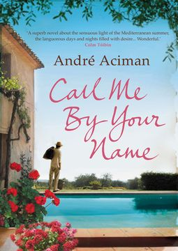

El término romance suele utilizarse, en la literatura actual, para hacer referencia a un relato extenso de ficción, normalmente en prosa, que se diferencia de la novela moderna porque presenta un mundo imaginario en el que los personajes y situaciones pertenecen a la esfera de lo maravilloso y lo insólito.
Romance

Orgullo y Prejuicio

El Ruiseñor

Nosotros en la Luna

Call me by your name

Rayuela
Lo que el viento se llevó